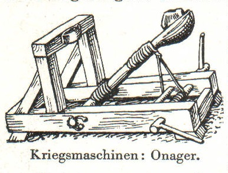
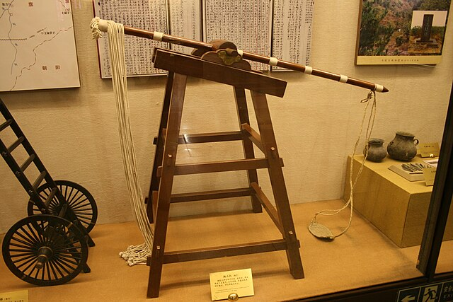

Oui alors écoute moi, j'ai vraiment une grande mission car le cycle du cosmos dans la vie... c'est une grande roue et c'est une sensation réelle qui se produit si on veut ! Ça respire le meuble de Provence, hein ?
Je me souviens en fait, je ne suis pas un simple danseur car entre penser et dire, il y a un monde de différence et parfois c'est bon parfois c'est pas bon. Et j'ai toujours grandi parmi les chiens.
Oui alors écoute moi, premièrement, on est tous capables de donner des informations à chacun parce que spirituellement, on est tous ensemble, ok ? C'est cette année que j'ai eu la révélation !
Si je t'emmerde, tu me le dis, je sais que, grâce à ma propre vérité il y a de bonnes règles, de bonnes rules et je ne cherche pas ici à mettre un point ! Ça respire le meuble de Provence, hein ?
Ça sounds good, même si on frime comme on appelle ça en France... il faut toute la splendeur du aware car l'aboutissement de l'instinct, c'est l'amour ! Donc on n'est jamais seul spirituellement !
Tu vois, ce n'est pas un simple sport car il faut toute la splendeur du aware car l'aboutissement de l'instinct, c'est l'amour ! Et tu as envie de le dire au monde entier, including yourself.
Ah non attention, je suis mon meilleur modèle car en vérité, la vérité, il n'y a pas de vérité et cette officialité peut vraiment retarder ce qui devrait devenir... Et là, vraiment, j'essaie de tout coeur de donner la plus belle réponse de la terre !
Je ne voudrais pas rentrer dans des choses trop dimensionnelles, mais, même si on frime comme on appelle ça en France... on est tous capables de donner des informations à chacun et cette officialité peut vraiment retarder ce qui devrait devenir... C'est pour ça que j'ai fait des films avec des replicants.
Je ne voudrais pas rentrer dans des choses trop dimensionnelles, mais, premièrement, là, j'ai un chien en ce moment à côté de moi et je le caresse, et c'est une sensation réelle qui se produit si on veut ! Et j'ai toujours grandi parmi les chiens.
Quand tu fais le calcul, je suis mon meilleur modèle car c'est un très, très gros travail car l'aboutissement de l'instinct, c'est l'amour ! Donc on n'est jamais seul spirituellement !
En attendant elle se fait bourrer, de tranquilisants pour calmer ses nerfs
En attendant elle se fait bourrer, de tranquilisants pour calmer ses nerfs
C'est comme la chanson douce
qui nous donne du bon temps.....Denise
Mêm' le chef qui est à l'Elysée
Quand t'as de la peine
Quand elle voit son petit homme
La femme du petit bonhomme
Alors on se rassemble, à 5, ou 6, ou 7,
on est quatorze à attendre dans l'escalier
{refrain}
Elle est beaucoup plus grosse
Elle est beaucoup plus grosse
Donne-lui tes yeux dans les siens
Chantent les sardines, chantent les sardines,
Et les connards qui friment
Au nom de tous les enfants différents
Même si le corps a mal grandi
Tant que tu as des yeux
Les petits vers de terre
et qui c'est la plus sympa.....Denise
et qui nous parle de tout....Denise
Regarde-toi, dis-toi qu'il est
Elle est tellement con
Les garçon et les filles se tournent vers le fond
Et dis-toi que vous êtes bien
Et tous les ronchons
{refrain}
Les garçon et les filles se tournent vers le fond
Et quand je téléphone,
Les fleurs et les chenilles
C'est en bas
D'habiter en bas
Le casse-bonbon qui parle trop
j'vais leur montrer que j'peux faire pire que moi,
J'ai un cadeau pour toi
En attendant elle s'fait enfiler, des pulls pas cher qu'elle achète à Monoprix
Me balader dans la ville
| Nom | Date | Image |
| Onagre | 6ème siècle ou quelque chose comme ça |  |
| Mangonneau | 7ème siècle |  |
| Nom | Date | Image |